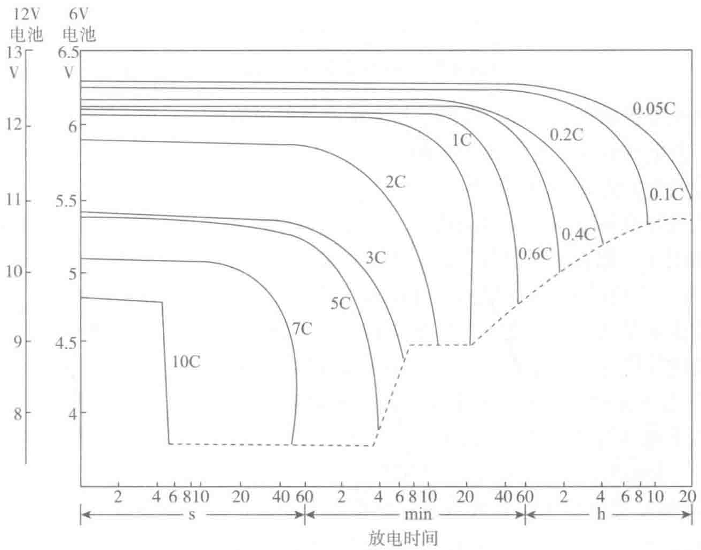

能正常工作的比例占40%左右。在UPS电源使用中，如何维护好电池，是一件非常重要的工作。如果正确的使用和维护电池，可以使电池的使用寿命达到额定年限。
密封铅酸蓄电池在实际运行中应该注意以下问题：
（1）避免短路和大电流放电
蓄电池放电电流较小时，电池输出电压维持稳定时间长；反之就短。当电池放电电流超过允许值时，会造成电池电压急剧的下降。以100A·h电池20小时放电率为例（见图3-30），若电池以5C（1C＝A/A·h，则5C的放电电流为5×100A＝500A）放电，则在放电瞬间电池电压从12V立即下降到10.8V，如果再继续放电，4分钟以后电池输出电压将会迅速下降到终止电压，电池恢复就比较困难；如果以10C（I＝1000A）以上的速率放电，5s以后电池电压下降为0V，有可能造成电池永久性的损坏。因此，控制好放电电流、在设计时尽量避免大电流放电，是延长电池寿命的重要因素。

（2）避免蓄电池过放电
过放电是蓄电池在使用中经常遇到的问题。什么是“过放电”呢？在放电的过程中，存在一个放电终止电压，如图3-31所示，图中的d点为放电终止电压。一般的密封铅酸蓄电池为1.65～1.75V/单体，当蓄电池后备时间较短时，可选终止电压较低的值，当蓄电池后备时间超过一小时，应适当提高终止电压。例如4h的蓄电池，终止电压应为1.8V/单体。放电终止时，电压是决定蓄电池是否可以继续放电的一个数量限界。超过这个界限继续放电就叫作“过放电”。简单地说，“过放电”就是蓄电池小电流放电时不加以相对较高的截